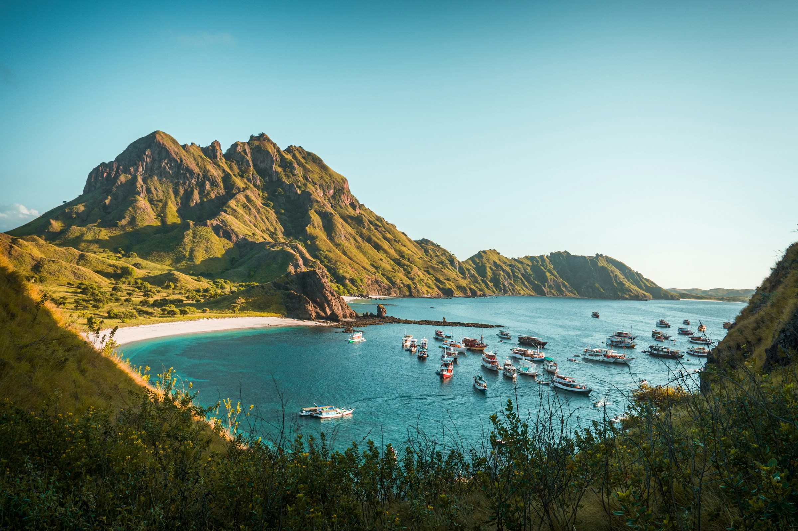
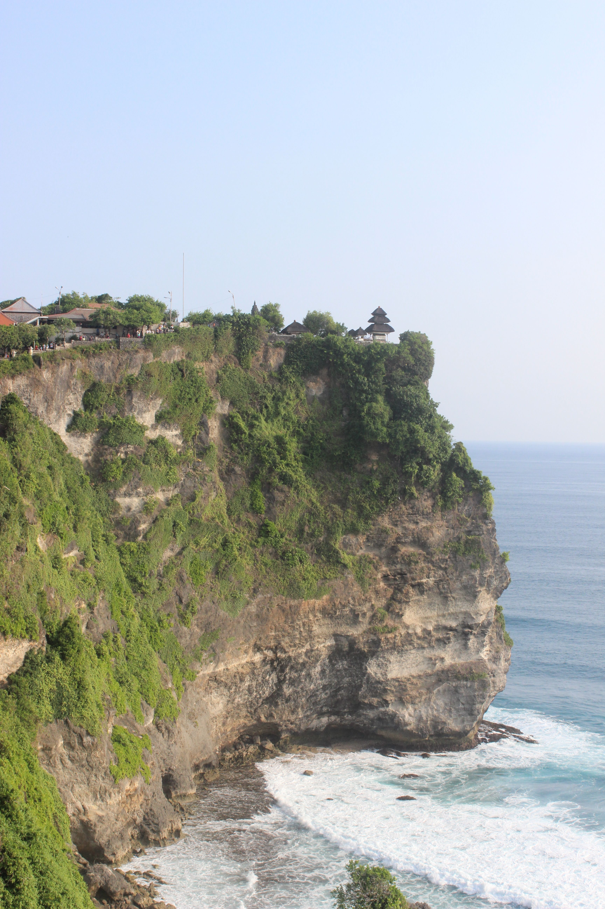

Indonesia is not one destination — it is seventeen thousand of them. Straddling the equator for more than five thousand kilometers, the archipelago packs in almost every landscape a traveler could ask for: smoking volcanoes, rainforests older than the last ice age, and reefs that hum with life. The hard part is not finding beauty here — it is deciding where to begin.
After countless ferries, pre-dawn hikes, and sunburnt boat rides, we shortlisted five nature destinations that genuinely live up to the word unforgettable. Some are world-famous, some still feel like a secret — all five will change the way you see this country.
“The best views in Indonesia are never the ones you planned for — they are the ones you meet at 4 a.m., half asleep, on the rim of a volcano.”
Komodo National Park

Few places on earth let you come face to face with a dragon. On the rugged islands of Komodo, Rinca, and Padar, the legendary Komodo dragon — the world's largest lizard — still patrols hills it has roamed for millions of years. Guided treks with national park rangers bring you within safe viewing distance, and trust us: watching one move is something you never forget.
But the dragons are only the beginning. Climb Padar Island before dawn for the panorama that adorns every Indonesian travel poster — three crescent bays, each a different shade of sand — then snorkel at Pink Beach and drift above manta rays at Manta Point. One day here feels like three different trips.
- Best time
- April – June
- Getting there
- Fly to Labuan Bajo (LBJ)
- Don't miss
- Padar sunrise trek
Mount Bromo
At 3 a.m., in an open jeep crossing a sea of black volcanic sand under a sky full of stars, you will understand why Mount Bromo deserves its reputation. When the first light breaks over the Tengger massif, the active crater below releases plumes of white smoke into the cold air — a scene that has drawn travelers for centuries.
Sacred to the Tengger people, Bromo rewards effort: the sunrise from Penanjakan viewpoint, the steep stairs up the crater rim, the low rumble you feel in your chest. Add the thundering Madakaripura waterfall nearby and you have a full day that starts in darkness and ends in awe.

- Best time
- June – August
- Getting there
- 3-hour drive from Surabaya
- Don't miss
- Sunrise jeep & crater rim
Uluwatu

Bali's southern tip ends dramatically: seventy-meter limestone cliffs falling straight into the Indian Ocean, crowned by an ancient temple that guards the edge of the world. Uluwatu is Bali at its most cinematic — golden light, a constant swell, and a horizon that seems to go on forever.
Time your visit for sunset, when the clifftop Kecak fire dance begins and a chorus of seventy voices performs the Ramayana against a burning sky. Then descend the hidden staircases to the coves below — Padang Padang, Bingin, Suluban — where world-class surf breaks and warungs serve grilled fish with your feet in the sand.
- Best time
- May – September
- Getting there
- ±1 hour from Denpasar
- Don't miss
- Kecak dance at sunset
Labuan Bajo
The gateway to Komodo is a destination in its own right. Once a quiet fishing town, Labuan Bajo now blends backpacker hostels, liveaboard boats, and hilltop dinners with views over a bay scattered with islands. It is the kind of place where “one more night” quietly becomes a week.
Rent a wooden boat and go island hopping; swim with turtles off Kelor, chase viewpoints on Padar, and at dusk anchor near Kalong Island as thousands of fruit bats stream out of the mangroves against an orange sky. Few sunsets in the world come with an audience like that.
- Best time
- April – November
- Getting there
- Direct flights from Jakarta & Bali
- Don't miss
- Kalong Island at dusk
Raja Ampat
Some places refuse to fit inside a photograph, so we won't try. At the heart of the Coral Triangle, Raja Ampat's jungle-capped karst islands rise from water that is home to three quarters of all known coral species — a place divers run out of adjectives describing.
Getting there is a journey in itself: a flight to Sorong, then a boat into open water. That distance is exactly why it still feels like a secret.
- Best time
- October – April
- Getting there
- Fly to Sorong, then liveaboard
- Don't miss
- Wayag & Piaynemo
No filter. No crowd. No photograph. Just go.
Traveler's Notes
Quick answers to the questions we hear most.
When is the best time to visit Indonesia?
The dry season (April–October) covers most of the country and is the safest bet. For Bromo's famously clear sunrises aim for June–August; for Raja Ampat, October–April brings the calmest seas.
Do I need a guide in Komodo National Park?
Yes — walking with a licensed ranger is mandatory on Komodo and Rinca. It costs a small fee on top of the entrance ticket, and honestly, their stories are half the experience.
How much should I budget per day?
Travel styles vary widely: comfortable island trips (boat, room, food) typically run IDR 800k–1.5M per day, while overland destinations like Bromo can be done for considerably less.
What should I pack?
Layers for pre-dawn summits, reef-safe sunscreen, water shoes, and a dry bag for boat days. Leave the drone at home near Komodo — it is restricted inside the park.
Ready when you are
Five places, five completely different versions of beautiful — dragons and fire dances, crater dawns and coral kingdoms. Indonesia never asks you to choose just one; it only asks you to start. Pick a dot on the map, book the ticket, and let the archipelago do the rest.